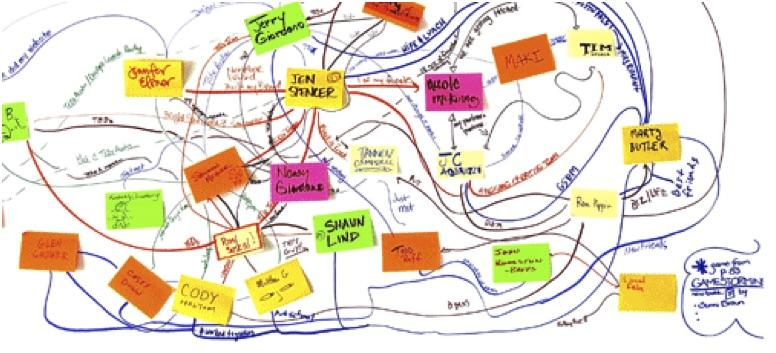

The Internet of Things poses a massive service design challenge. There are multiple sets of interacting services, stakeholders, needs, data and considerations. Drawing on your experiences in this course and this weeks reading (Everywhere), this exercise maps them out making them visible and open for coordinated discussion.
By the end of this exercise, students will:
have explored the considerations involved for specific IoT contexts
have developed an understanding and appreciation for the complex interactions between product, data, stakeholders and services within the IoT vision.
1 - 2 hours (depending on time)
Post-it notes
White board
Sharpies or markers
Work in groups of 6-8 to collectively develop a network map of how all of these component pieces interact. Each team will be assigned a IoT context, namely:
Connected Homes
Connected Office / Workplace
Smart Cities
Connected Transportation (or more focused, Cars)
Connected Health
Logistics
Part 1: Map the Network, Stakeholders and Interactions
Spend 10-15 minutes identifying as many of the following as possible. Then organize them in a map to illustrate how they relate to one another.
Objects - Find 3-5 related objects (or connected products) as starting points for your scenario
Actors - Who are the end users? Who are the stakeholders have a vested interest in the outcome? Who is the company or provider? Who are the third parties?
Data - What information does the scenario need to be successful? What information does it create or share?
Services - Beyond the physical objects or products, what services do these scenarios connect with? Does it require email, mobile phone networks, etc.
Place the items you have uncovered in a sensible arrangement to illustrate their relationships. Draw connections too!
You should end up with something like this

Part 2: Build in the Considerations + Concerns
Develop an annotated map that describes the considerations and concerns.
Knowing the interacting pieces, what are the considerations and concerns that are created by this network? Or more simply put: what is it you need to design for?
These are questions you might ask:
Actors:
● What are the primary motivations of each of the actors?
● How do their interests overlap and intersect? What values flow between actors?
● How could they benefit directly or indirectly?
● What are they afraid of?
● What are they responsible for or what burdens are placed on them?
● What might go wrong for them? How could they be made vulnerable?
Services:
● What are the limitations of the service?
● What pains or obstacles could it create?
Data:
● Who can see the data and when?
● What concerns does the data create?
● What data can be public and what data should be private? Why?
● What would happen if data was exposed beyond the actors?
Part 3: Report out
Identify 5 key considerations and concerns about designing for the IoT in your context.
Give a 3-5 minute of theses considerations and concerns.
Submitting your work:
Create a Post in the #projects channel on Slack by the end of class. Include a write up/summary of your discussion and photos of your brainstorming work / process.